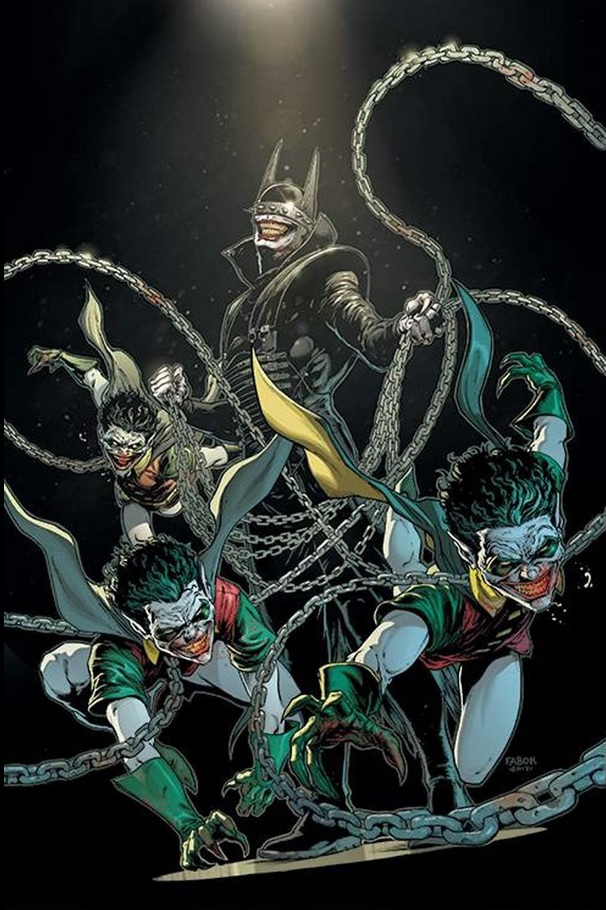

Mahahaha! Welcome reader. The story of my life isn’t very interesting. I’m just a random girl who is trying to be normal, but between my messed up past and secret life as a spy, it’s not easy to be normal. I’m obviously joking, but wouldn’t that be an interesting story? Let me tell you about me, my name is Devine Elliott and I was born on January 20, 2002. I was born in Durham, North Carolina, but I have been living in Florida since I was only four months old. I am a junior in the Magnet Program at Blanche Ely High School. My favorite subjects are math, science and I dislike writing with a passion.
I am an interesting, fun loving girl with a good sense of humor. I laugh at the cheesiest jokes. One thing about me that is important to know though is that at first, I may come off as a very shy and introvert girl; however, once I get acquainted with a person or the people I can be jovial. I am kind, sensitive and compassionate. My family and friends would agree if you were to ask. I am very strong will and can put on a hardcore defense, but on the inside I am softy depending on the subject matter. I am also a loner who enjoys my own company. Often times like being in my own space. I love reading and watching a good movie, mostly Sci-fi and American Drama series shows. My favorite television show is Gotham. I am a person of principle and stand strong on what is right and wrong in my own book. Going to the library is very fun for me. I can look for interesting books to read. I can also go on the computer and search the web, and I can also find a comfortable chair at the library and get lost in a book reading.

Batman is my favorite superhero of all times. You can clearly see that I am a big fan of Batman, he has great qualities even if he has his own personal issues. But his character is what makes him so amazing. He’s got a fantastic martial arts skills; high intelligence; tough allies; a deep personality and so many more things to back him up. The main reason I admire him is that he is an amazing engineer. In case you didn't know Batman has a wide range of tools to helps him fight criminals. These scale from small boomerang shaped projectiles to incredible vehicles like the Batmobile and Batplane. Batman has also managed to build suits which are able to handle certain situations or even certain characters. With all these great qualities, how can you not wanna marry him? Yes, I said it wanna marry Batman, I'll even take one of his prodigies. I wanted to be a butt-kicking superhero, but since I can't I'll just stick to being an engineer.
I have a large family. It seems as if it was the norm in my grandfather’s days being born and raised in Jamaica, West Indies to have so many children. My grandfather has 15 children and out of the fifteen children, 12 of them are males and three girls and over 30 grandchildren with his great-grands adding up also. My grandmother, on the other hand, had seven children for my grandfather. Would you believe I have nieces and nephews that are older than me and have already completed their four years of college? I have one niece that was her school’s valedictorian. My mom encourages me to always do my best and says I also can accomplish what my niece has accomplished, but I tell her I don’t want to because I don’t want to be the center of attention. I have even asked If I can avoid attending graduation to avoid walking across the stage. I believe I have a fear that I may fall. How funny is that? So as you can see, I'm very smart, funny, and of course, I'm very good looking. I have high goals for myself. I suppose I am weird to some people because I tend to be a loner and I like to read. I don’t talk much to people I do not know. I have a huge family although most of my family live up North. I wish we all lived closer. I tend to be lazy and that is only because I prefer to just read and watch T.V.